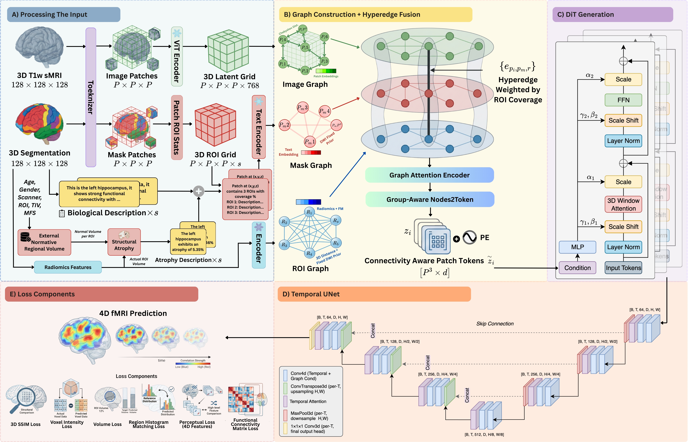
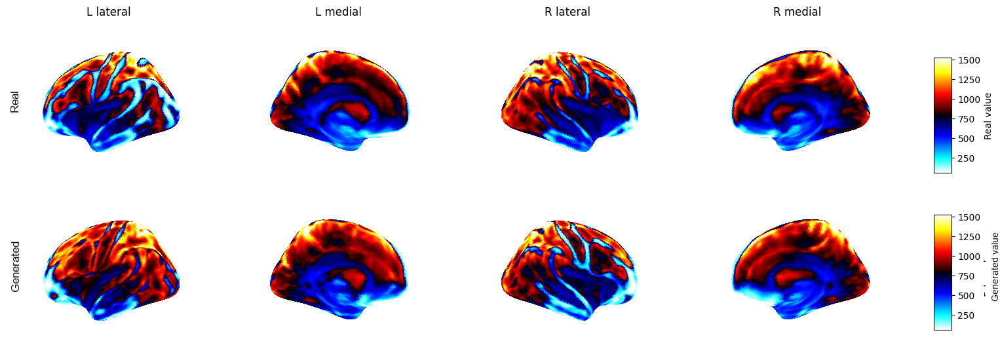
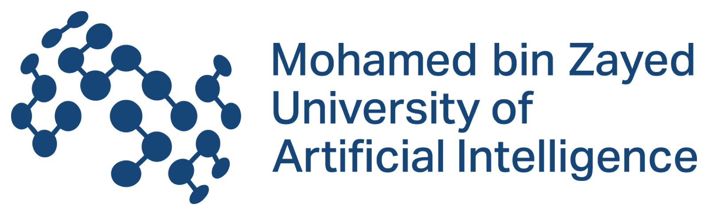

4D structural-to-functional synthesis
Full subject-specific spatiotemporal BOLD sequences from a single structural scan.
1 Mohamed bin Zayed University of Artificial Intelligence 2 Assiut University 3 Sheikh Shakhbout Medical City 4 Inclusive Brains 5 Biotech Dental Group

Resting-state functional MRI reveals network-level biomarkers for brain disorders, yet its cost, duration and limited availability mean that most patients undergo structural MRI alone.
CONNECT-4 bridges this structural-functional gap by generating subject-specific 4D rs-fMRI volumes directly from T1-weighted sMRI. A unified hypergraph integrates anatomy, ROI masks and connectivity priors, while a biologically informed objective aligns voxel signals, regional functional connectivity and global network properties.
Full subject-specific spatiotemporal BOLD sequences from a single structural scan.
A unified hypergraph over anatomy, ROI masks and connectivity priors.
Joint alignment of voxel signals, ROI connectivity and global network properties.
The method treats fMRI synthesis as a systems-level prediction problem rather than a voxel-wise contrast translation task.
T1w and segmentation patches produce frozen image and clinical-text embeddings; ROI features combine radiomics and anatomical foundation-model representations.
Image, mask and ROI graphs capture spatial neighbourhoods, structural-connectivity priors and region-level anatomy.
Each patch connects to its present ROIs with weights proportional to fractional regional coverage.
Timestep-modulated spatial and temporal attention progressively transforms noise into an anatomy-conditioned 4D latent sequence.
Full-time temporal-channel attention refines all 128 frames into coherent resting-state fMRI dynamics.
CONNECT-4 preserves spatial organisation and improves every reported synthesis metric over the evaluated baselines.

Lower is better for MSE and FID; higher is better for all other metrics.
| Model | MSE ↓ | Voxel Corr ↑ | ROI Corr ↑ | F2F Corr ↑ | SSIM ↑ | PSNR ↑ | FID ↓ |
|---|---|---|---|---|---|---|---|
| Pix2Pix | 0.075 | 0.521 | 0.598 | 0.581 | 0.612 | 19.745 | 28.54 |
| U-Net2Pix | 0.072 | 0.562 | 0.641 | 0.612 | 0.719 | 19.982 | 24.68 |
| Temporal U-NetFlow | 0.064 | 0.598 | 0.671 | 0.703 | 0.621 | 20.484 | 21.92 |
| 4D Stable Diffusion | 0.098 | 0.476 | 0.531 | 0.558 | 0.542 | 18.923 | 35.27 |
| 4D VQ-GAN | 0.097 | 0.543 | 0.592 | 0.623 | 0.581 | 19.213 | 28.91 |
| 4D DiT | 0.063 | 0.568 | 0.648 | 0.718 | 0.637 | 20.156 | 23.85 |
| Ours (no HyperGraph + loss) | 0.038 | 0.641 | 0.728 | 0.762 | 0.751 | 21.247 | 16.74 |
| CONNECT-4 (full) | 0.027 | 0.787 | 0.791 | 0.783 | 0.824 | 22.145 | 12.18 |
Synthetic rs-fMRI adds complementary functional information to structural MRI in downstream disease classification.
Explore the implementation and follow the paper release.
The repository maps the paper’s preprocessing, graph fusion, diffusion generation, temporal refinement and evaluation stages to executable code.
GitHub repositoryThe paper link and final citation will be added here when the publication is released.
The final BibTeX entry will be available when the paper is released.
CONNECT-4: Brain Connectivity-Guided Hyperedge Graph Fusion for Structural MRI to 4D Rest Functional MRI Synthesis
A collaboration across artificial intelligence, computer science, healthcare and neuroscience.
